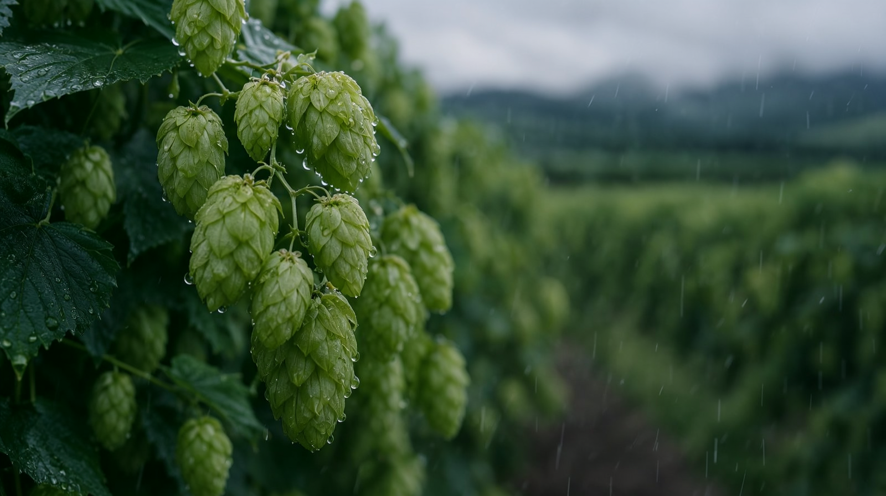
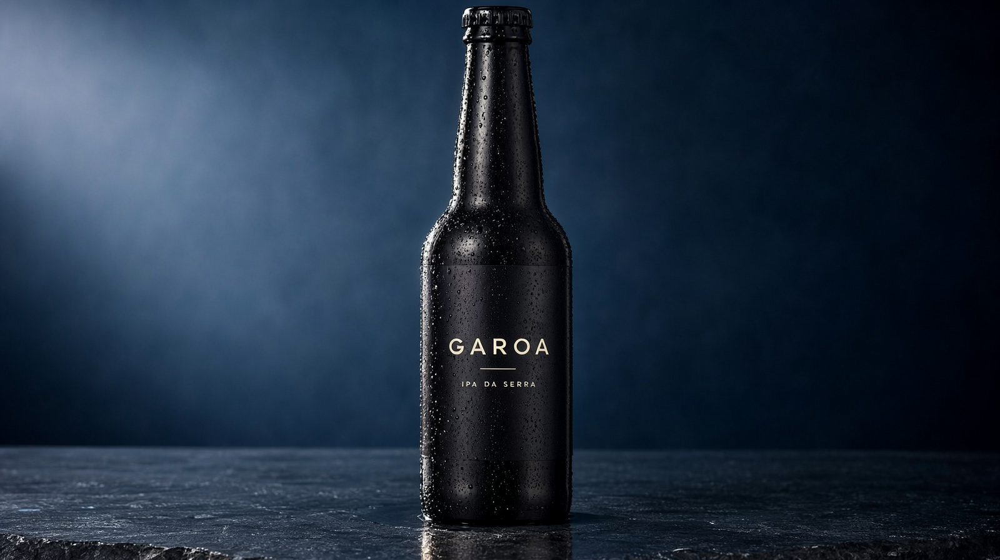
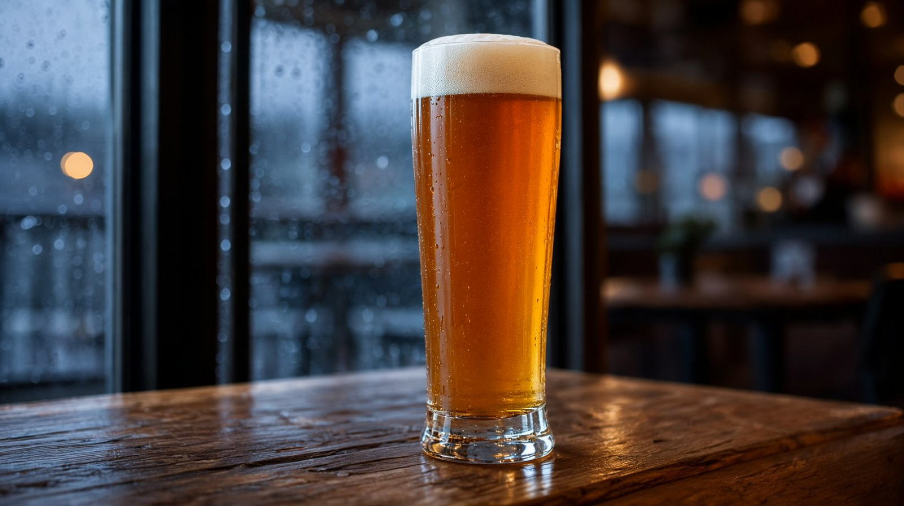

Nova rodada de pesquisa e reavaliação — desta vez o alvo era unificar tudo em 704p com a destilação Turbo do Wan e suavizar o movimento com interpolação RIFE a 48 fps. A pesquisa revelou um gargalo inesperado (VAE decode) e o v3 entrega o produto mais coeso até agora: GAROA, cerveja artesanal IPA — trilha sonora dirigida, câmera com intenção, 720p/20 s.
Pesquisa + reavaliação · out/2026
| Tese testada | Resultado | Consequência no v3 |
|---|---|---|
| Wan 2.2 5B Turbo (distilação 4 steps, GGUF Q5 3,6 GB cabe inteiro na VRAM) → tudo em 704p | Meia-vitória: sampling caiu de ~50 min para 56 s (14 s/step!)… mas o take levou 50 min mesmo assim — o VAE decode de 121 frames a 704p custa ~45 min (22 s/frame) na 8 GB. QA 8/10 (vs 9/10 do fp16 20st). | Turbo documentado como resultado negativo honesto; híbrido v2 mantido (hero fp16 20st, resto H3@8st) |
| RIFE nativo (FrameInterpolate + rife_v4.26) → 48 fps | ✓ nativo no ComfyUI 0.42, modelo de 22 MB | Motion duplamente mais fluido no master final |
| Wan 2.6/2.7 para qualidade maior | Sem pesos abertos locais — templates do ComfyUI são só API de nuvem | Descartado |
| LTX-2.5 (22B, vídeo+áudio) | Licença community (teto US$10M), 16 GB oficial | Descartado |
| Ace-Step 1.5 para trilha sonora | Nativo e viável (~10 GB de pesos p/ pipeline XL) | Reserva v4 — no v3 a trilha vem do H3 com direção musical no prompt |
Matriz A/B ampliada · mesmo still, mesmo prompt (espresso pour do SERRA)
O take Turbo prova o ponto: mesmo com sampling 53× mais rápido, o tempo total não cai porque o VAE decode domina. A leitura correta da tabela: custo/take ≈ constante em ~50 min para qualquer 704p nesta GPU — a escolha entre engines 704p é só de qualidade, nunca de tempo.
O produto novo · 20 s · 1280×720 · 48 fps
Versão 48 fps (RIFE) · a de 24 fps está em video/garoa_commercial.mp4



Trilha dirigida: cada doador H3 recebe direção musical contínua no prompt — "slow melancholic indie guitar theme" → "theme continuing" → "swelling with light percussion" → "resolving warmly with a final chord". O H3 costuma respeitar; a edição encadeia com micro-crossfades. Câmera com intenção: dolly-in QUASE imperceptível nos planos de abertura/fecho (Wan/H3 entendem a linguagem), câmera travada no rótulo (texto) e no hero. A regra continua: nada de órbita em texto.
A jornada completa
| v1 | v2 | v3 | |
|---|---|---|---|
| Produto | Perfume MOSS | Café SERRA | Cerveja GAROA |
| I2V | H3@4st (errado) | H3@8st + Wan fp16 hero | H3@8st + Wan fp16 hero (dolly dirigido) |
| Fps do master | 24 | 24 | 48 (RIFE) |
| Áudio | ambiência H3 bruta | ambiência H3 | trilha com direção musical (arco guitarra→percussão→acorde final) |
| QA por take | olhômetro | VLM por frame | VLM por take + verificação letra-por-letra com zoom |